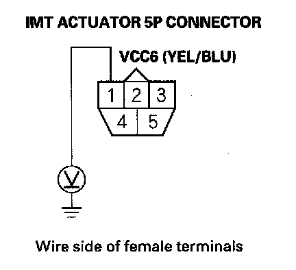
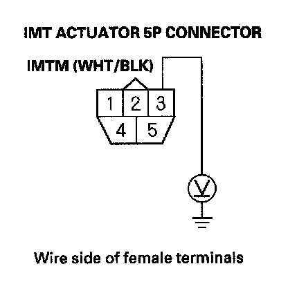
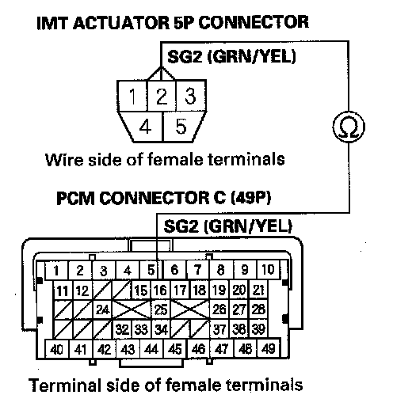
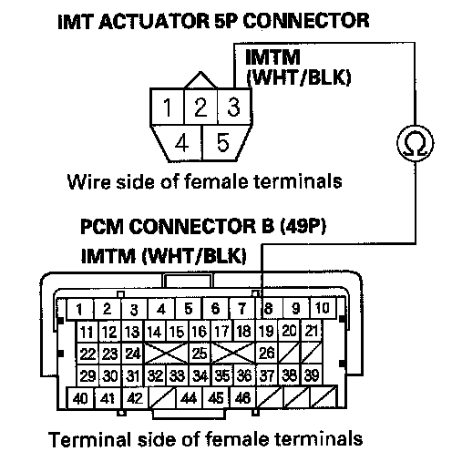
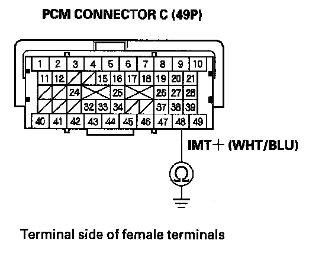
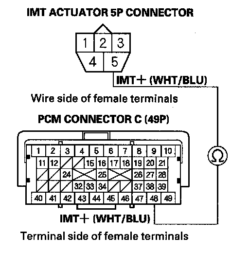
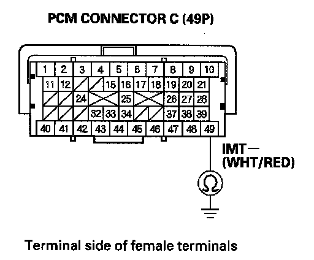
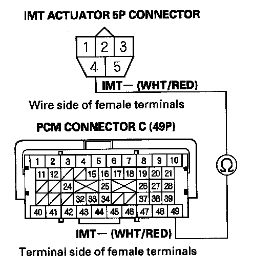

DTC Troubleshooting
DTC P1077: IMT Valve Stuck in High RPM PositionNOTE: Before you troubleshoot, record all freeze data and any on-board snapshot, and review the general troubleshooting information.
1. Turn the ignition switch ON (II).
2. Clear the DTC with the HDS.
3. Start the engine, and then let it idle without load (in Park or neutral) until the radiator fan comes on.
4. Start the engine, and hold the engine speed above 3,800 rpm.
5. Check the IMT VALVE CMD in the DATA LIST with the HDS.
Is OPEN indicated?
YES - Go to step 6.
NO - Go to step 35.
6. Check the IMT VALVE SW in the DATA LIST with the HDS.
Is CLOSE indicated?
YES - Go to step 7.
NO - Intermittent failure, the system is OK at this time. Check for poor connections or loose terminals at the IMT actuator and the PCM.
7. Let the engine idle, then turn the ignition switch OFF.
8. Disconnect the IMT actuator 5P connector.
9. Turn the ignition switch ON (II).

10. Measure voltage between IMT actuator 5P connector terminal No. 1 and body ground.
Is there about 5 V?
YES - Go to step 11.
NO - Repair open in the wire between the PCM (C11) and the IMT actuator, then go to step 26.

11. Measure voltage between IMT actuator 5P connector terminal No. 3 and body ground.
Is there about 5 V?
YES - Go to step 12.
NO - Go to step 16.
12. Turn the ignition switch OFF.
13. Jump the SCS line with the HDS.
14. Disconnect PCM connector C (49P).

15. Check for continuity between PCM connector terminal C16 and IMT actuator 5P connector terminal No. 2.
Is there continuity?
YES - Go to step 20.
NO - Repair open in the wire between the PCM (C16) and the IMT actuator, then go to step 26.
16. Turn the ignition switch OFF.
17. Jump the SCS line with the HDS.
18. Disconnect PCM connector B (49P).

19. Check for continuity between PCM connector terminal B19 and IMT actuator 5P connector terminal No. 3.
Is there continuity?
YES - Go to step 34.
NO - Repair open in the wire between the PCM (B19) and the IMT actuator, then go to step 26.

20. Check for continuity between PCM connector terminal C48 and body ground.
Is there continuity?
YES - Repair short in the wire between the PCM (C48) and the IMT actuator, then go to step 26.
NO - Go to step 21.

21. Check for continuity between PCM connector terminal C48 and IMT actuator 5P connector terminal No. 5.
Is there continuity?
YES - Go to step 22.
NO - Repair open in the wire between the PCM (C48) and the IMT actuator, then go to step 26.

22. Check for continuity between PCM connector terminal C49 and body ground.
Is there continuity?
YES - Repair short in the wire between the PCM (C49) and the IMT actuator, then go to step 26.
NO - Go to step 23.

23. Check for continuity between PCM connector terminal C49 and IMT actuator 5P connector terminal No. 4.
Is there continuity?
YES - Go to step 24.
NO - Repair open in the wire between the PCM (C49) and the IMT actuator, then go to step 26.
24. Remove the IMT actuator.
25. Move the IMT valve by hand.
Does it move smoothly?
YES - Substitute a known-good IMT actuator, then go to step 26 and recheck. If DTC P1078 is not indicated, replace the IMT actuator, then go to step 26. If DTC P1078 is indicated, go to step 35.
NO - Remove the engine cover, and repair the stuck valve. If necessary, replace the intake manifold, then go to step 26.
26. Reconnect all connectors.
27. Turn the ignition switch ON (II).
28. Reset the PCM with the HDS.
29. Do the PCM idle learn procedure.
30. Start the engine, and then let it idle without load (in Park or neutral) until the radiator fan comes on.
31. Start the engine, and hold the engine speed at 3,800 rpm for 10 seconds, then let it idle.
32. Check for Temporary DTCs or DTCs with the HDS.
Is DTC P1077 indicated?
YES - Check for poor connections or loose terminals at the IMT actuator and the PCM, then go to step 1.
NO - Go to step 33.
33. Monitor the OBD STATUS for DTC P1077 in the DTCs MENU with the HDS.
Does the screen indicate PASSED?
YES - Troubleshooting is complete. If any other Temporary DTCs or DTCs were indicated in step 32, go to the indicated DTCs troubleshooting.
NO - If the screen indicates FAILED, check for poor connections or loose terminals at the IMT actuator and the PCM, then go to step 1. If the screen indicates NOT COMPLETED, go to step 31.
34. Reconnect all connectors.
35. Update the PCM if it does not have the latest software, or substitute a known-good PCM.
36. Start the engine, and then let it idle without load (in Park or neutral) until the radiator fan comes on.
37. Start the engine, and hold the engine speed at 3,800 rpm for 10 seconds, then let it idle.
38. Check for Temporary DTCs or DTCs with the HDS.
Is DTC P1077 indicated?
YES - Check for poor connections or loose terminals at the IMT actuator and the PCM. If the PCM was updated, substitute a known-good PCM, then go to step 37. If the PCM was substituted, go to step 1.
NO - Go to step 39.
39. Monitor the OBD STATUS for DTC PI 077 in the DTCs MENU with the HDS.
Does the screen indicate PASSED?
YES - If the PCM was updated, troubleshooting is complete. If the PCM was substituted, replace the original PCM. If any other Temporary DTCs or DTCs were indicated in step 38, go to the indicated DTCs troubleshooting.
NO - If the screen indicates FAILED, check for poor connections or loose terminals at the IMT actuator and the PCM. If the PCM was updated, substitute a known-good PCM, then go to step 37. If the PCM was substituted, go to step 1. If the screen indicates NOT COMPLETED, go to step 37.